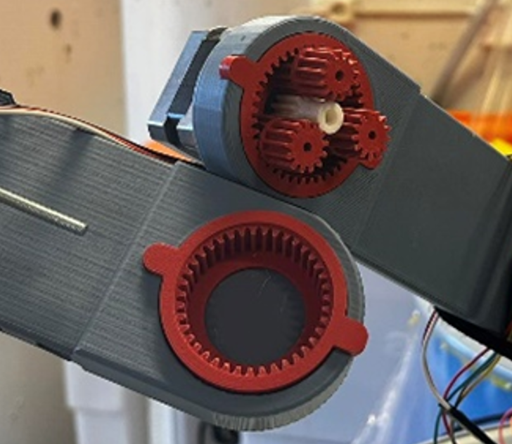
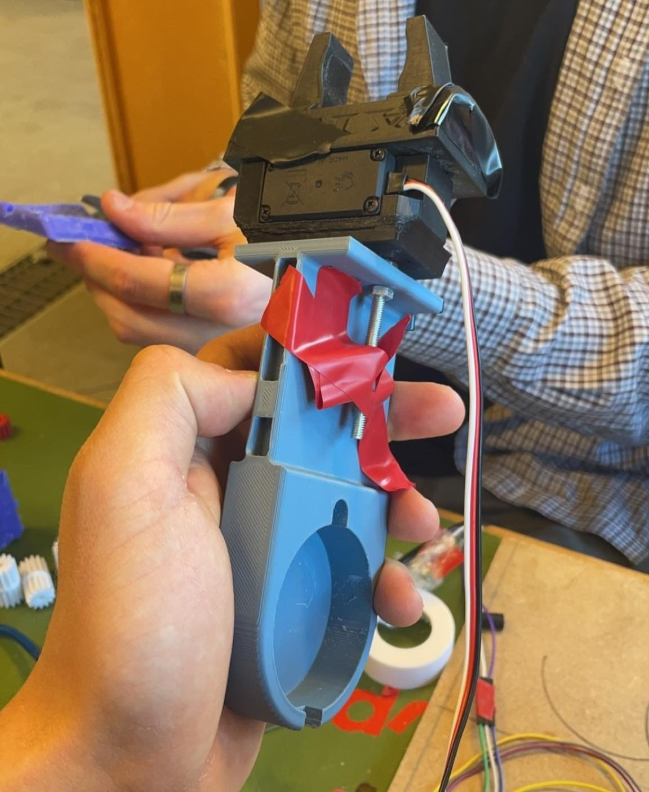

Verkefnalýsing
Líkt og í verkefni 2 er þetta verkefni tvískipt, það átti annars vegar að hanna módel fyrir 3D prentun sem ekki væri hægt að framkvæma með frádráttar framleiðslu og hins vegar að 3D skanna með photogrammetríu..
3D prentun hönnunarferli
Í þessum hluta verkefnisins á að 3D prenta hlut sem væri ekki hægt að framkvæma með frádráttar framleiðslu og mátti ekki nota meira en 100g af efni. Við gerð þessarar verkefnis var ég á sama tíma á fullu að vinna í öðru verkefni í áfanganum VÉL205M Tölvustýrður vélbúnaður að búa til vínglasa róbot. Því fannst mér tilvalið að sameina þessi tvö verkefni og 3D prenta nauðsynlegan arm fyrir verkefnið. Við framkvæmd þessarar verkefnis notaði ég Autodesk Inventor Professional og Prusa slicer.
Armurinn þurfti að vera með hýsingu fyrir plánetugír sem tengdist við fyrri arminn, hann þurfti að vera með festingu fyrir kló fremst á arminum ásamt því að geta haldið bæði litarnema og hitanema, svo þurfti hann að geta haldið vírum á bæði fallegan og hentugan máta. Þegar þessar hönnunarforsendur voru skýrar hófst ég handa við að hanna arminn.
Fyrst byrjaði ég á því að hanna hýsinguna fyrir plánetugírinn sem átti eftir að tengjast við fyrri arminn. Þar sem ég hafði líka hannað fyrri tvo armana sem voru með svipaðari hýsingu var þetta einfalt ferli. Plánetugírinn var 50mm í þvermáli, 1,5 cm djúpur og var með litlum útstæðum krókum til að hjálpa að snúa arminum. Þessir útstæðu krókar voru hálfhringir með 8 mm þvermál. Til að búa til „sliding fit“ gerði ég festinguna fyrir útstæða krókana að hálfhringjum með 8,2 mm þvermál og festinguna fyrir gírhýsinguna hring með 50,2 mm þvermál. Hægt er að sjá mynd af því á mynd 1 og 2.

Mynd 1: Mynd af hönnuninni á hýsingunni. - 
Mynd 2: Mynd af plánetugírnum inn í hýsingunni.
Hægt er að nálgast stp skrá af plánetu gírnum í glugganum hér fyrir neðan.
Næst hannaði ég svo arminn sjálfan. Hann þurfti ekki að vera eins þykkur og plánetugírs hýsingin þar sem efnið er tiltölulega sterkt. Þannig að til að spara efni og tíma í prenti ásamt minnka þyngt armsins minnkaði ég þykktina um helming, þ.e. ég gerði hann 1 cm þykkan. Við vildum hafa um 10 cm frá miðju hýsingunni að klónni þannig að lengd armsins var mæld út frá því, hann endaði með að vera 60 mm. Til að halda villtum vírum fasta við arminn, hannaði ég hólf meðfram arminum sem fór 5 mm inn í arminn og var með tveim festingum sem fóru yfir hólfið svo að vírarnir myndu haldast í hólfinu. Hægt að sjá mynd af vír festingunni á mynd 3

Síðasti hluti armsins er festingin fyrir klóna og mælibúnaðinn. Klóin sem hafði verið hönnuð var 4 cm á breidd með tveim boltafestingum sem voru 27 mm frá hvorum öðrum. Til einföldunnar gerði ég vegg á enda armsins sem uppfyllti þær kröfur. Á botni armsins bjó ég einnig til örþunna festingu sem hægt er að festa mælibúnað við. Hægt er að sjá mynd af síðasta hluta armsins og þar með fulla hönnun armsins á mynd 4.

Hér er hægt að nálgast stp skrá af arminum.
Hönnunar reglur/þvinganir
Þegar unnið er með 3D prentara eru nokkrar hönnunar þvinganir sem þarf að hafa í huga. Þær eru t.d. stærð beddans, þ.e. hámarks prentstærð prentarans, þörf á stuðning, veggþykkt, prentunar átt, yfirborðs gæði, innfylli o.s.frv.. Við framkvæmd verkefnisins var notað 3D Prusa MK3+ 3D prentara og er hann með 250 x 210 x 210 mm bedda. Heildar stærð prentsins er 130 x 40 x 60 mm og því hönnunin vel innan þeirra marka. Mikilvægt er að hanna hlutinn sinn þannig að ekki er mikið af yfirhangandi (e. overhanging) fletum þar sem prentarinn getur ekki prentað í lausu lofti. Ef nauðsynlegt er að hafa hlutinn yfirhangandi er hægt að notast við stuðning (e. support). Þar sem við vildum hafa prent áttina meðfram arminum ásamt því að takmarka stuðning þurftum við að leggja arminn á botninn sinn, þannig að mælibúnaðar festingin liggi á prentbeddanum, hægt að sjá mynd af uppsetningu á mynd 9. Þetta leiddi til þess að það vantaði stuðning í plánetugírs hýsinguna, ásamt kló og víra festingarnar, hægt að sjá mynd af stuðningi á mynd 11. Yfirborðsgæði prentsins í plánetugírs hýsingunni þurfa að vera ágætlega mikil til þess að plánetugírinn kemst inn í hana. Til þess að ná því er hægt að nota stillingu með fínni gæði eins og "0,15 mm Quality print" sem minnkar þá hæðina á hverju prentlagi og nær því betri gæðum á hýsingunni. Gott væri að skera hlutinn niður í þá hluta eða skala hann niður og gera prufu á prenti, til þess að staðfesta virkni á tilteknum fítusum. Eins og kom fram fyrr í þessari dagbók þá hannaði ég alla fyrri armana í þessum vínróbot svo að ég vissi að það virkaði að nota stuðning fyrir vír festingarnar frá fyrrum prentum, hægt er að sjá dæmi um fyrri arm á mynd 5. Einnig vissi ég að hægt væri að nota stuðning og "Quality print" fyrir lóðrétt göt líkt og plánetugírs hýsingin og kló festingarnar. Þar sem hópurinn hafði áður fyrr prentað gírfestingar á botni róbotans sem var með svipaða hýsingu fyrir legur og göt fyrir öxla með góðum árangri. Hægt er að sjá mynd af gírfestingunni á mynd 6. Með þessa þekkingu taldi ég óþarfi og sóun á efni að prenta út prufu á arminum. Einnig er mikilvægt að veggþykktir og stærð gata séu ekki minni en breidd stútsins á prentaranum. Hér var verið að nota 0,25 mm stút og voru engir veggir né holur minni en það. Að lokum þarf að hafa í huga hversu mikið álag hluturinn fær á sig og meta út frá því magnið af nauðsynlegri infyllingu (e. infill) á prentuninni. Þessi armur sér um að halda glasinu ásamt því að hýsa klónni og þarf því að vera frekar sterkur.


3D prentun
Þegar hönnunin var komin og hönnunar þvinganirnar ljósar var aðeins eftir að undirbúa hlutinn fyrir prent og setja prentarann í gang. Ég hlóð niður hönnuninni sem STEP skrá og opnaði hana í Prusa Slicer forritinu sem ég hafði hlaðið niður áður fyrr. Þar þarf að velja réttan stút, rétt efni og réttan prentara. Í mínu tilfelli valdi ég 0,15 mm QUALITY @0,25 nozzle MK3 til að fá nauðsynleg gæði á yfirborðið, Generic PLA efni og Original Prusa i3 MK3S og MK3S +0,25 nozzle sem er prentarinn og efnið sem var notað í þetta verkefni. Ég þurfti hins vegar að finna réttan prentara undir Printer>Add/remove printers>Add/remove presents. Þar þurfti ég að finna réttan prentara og hlaða honum inn. Hægt að sjá myndir af því ferli á myndum 7 og 8.


Þegar réttar prentara stillingar eru komnar þarf að setja þann flöt sem þú vilt/er líklegastur til árangurs á prentflötinn með því að velja „Place on face“ og velja tiltekinn flöt. Eins og kom fram í Hönnunar reglur/þvinganir kaflanum vildum við hafa prentlínurnar meðfram hlutnum og var því botninn á arminum settur á prentflötinn. Sjá mynd 9.

Þá er aðeins eftir að velja „infill“ prósentuna og hvort þú viljir hafa stuðning í prentinu þínu. Armurinn minn þurfti að vera ágætilega sterkur svo ég valdi 40% infill og "Support Everywhere" til þess að fá nauðsynlegan stuðning í plánetugírs hýsinguna og í kló og vír festinguna. Hægt er að sjá mynd af þeim stillingum á mynd 10.

Þegar allar stillingarnar eru komnar þá er ýtt á „slice now“. Hægt er að sjá niðurstöðuna á mynd 11.

Næst exportaði ég g-kóðanum og setti á minnislykil fyrir prentarann. Þá var allt tilbúið og eina það ég átti eftir að gera var að velja hlutinn af minnislyklinum í prentaranum, velja efnið og byrja prentið. Prentarinn byrjar þá á því að hita beddann og er þá gott að smyrja lími á beddann. Þegar prentarinn byrjar svo að prenta er gott að fylgjast með fyrstu tveimur lögunum í prentinu til að ganga úr skugga að prentið byrjar vel. Í mínu tilfelli kláraði prentarinn fyrstu lögin með prýði sem boðaði gott prent.
Lokaniðurstöður
Eftir 9 tíma og 30 mínútu prent og 70 g af efni var armurinn tilbúinn og kom fullkomlega út. Þá var tekið sköfu og losað arminn frá prent beddanum ásamt því að losa allan stuðninginn af pláneturgírs hýsingunni og festingunum með hjálp tanga. Armurinn virkaði í heildarsamsetningunni eins og ætlaðist. Þ.e. plánetugírinn smellpassaði inn í hýsinguna, vírarnir fóru snyrtilega í festingarnar sínar, klóin og mælibúnaðurinn vöru föst við arminn og mikilvægast af öllu þá náði hann að lyfta arminum. Hægt er að sjá mynd af arminum á mynd 12, mynd af arminum í heildar samsetningu á mynd 13 og hægt er að sjá myndband af arminum að lyfta upp glasi hér .
- 
Mynd 12: Mynd af 3d prentuninni í lokauppsetingu róbotar armsins. 
Mynd 13: Mynd af arminum í lokauppsetingu róbotar armsins.
3D skönnun
Við framkvæmd þessarar verkefnis var notað appið Polycam sem fékkst á app store í símanum mínum. Inn á því tók ég 61 myndir af brúsanum mínum og ýtti á „UPLOAD & PROCESS“ það ferli tók síðan appið um 5 mínútur að mynda 3D skönnun af brúsanum mínum. Hægt er að sjá myndir af ferlinu hér fyrir neðan.


Eins og sést á einni myndinni af niðurstöðunum vantaði smá af bakhlið brúsans. Það stafar líklegast af of fáum myndum og eftir á að hyggja hefði líklegast verið betra að taka um 100 myndir. Hægt er að sjá 3D skönnunina betur í glugganum hér fyrir neðan.
Tímatafla
| Tími | Vinna |
| 3 klst | Teikning á armi |
| 10 klst | 3D prentunar test |
| 0,5 klst | Undirbúa fyrir 3D prentun |
| 9,5 klst | 3D prentun |
| 0,5 klst | 3D skönnun |
| 8 klst | Uppfæra síðu |
| 31,5 klst | Heildar tími |
Skrárnar sem unnið var með í þessu verkefni
Hér er hægt að hlaða niður zip skrá með öllum loka skjölunum sem notaðar voru í þessu verkefni: ZIP skrá